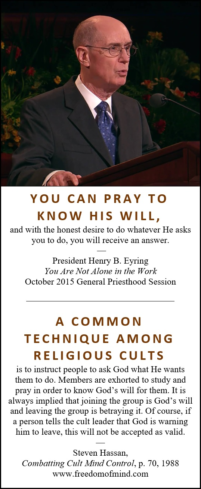

Dedicated to those who mourn the loss of their former beliefs and the damage to relationships that depended so much on sharing those beliefs.
I mourn with you.
I’ve compiled my observations regarding the Book of Mormon because I think a lack of knowledge may be the most serious limit to a person’s agency.
Man could not act for himself save it should be that he was enticed by the one or the other [opposing things].
(2 Nephi 2:15-16)
I value the truth, and that led me to join The Church of Jesus Christ of Latter-day Saints (also known as the LDS Church or Mormon Church), but I didn’t receive a full disclosure about the Church’s teachings and claims, so my annotations are my attempt to provide that disclosure about the Book of Mormon. I suspect you value the truth too, so please explore my annotations and offer your correction if I am wrong in even the smallest point.
The honest investigator must be prepared to follow wherever the search of truth may lead. Truth is often found in the most unexpected places. He must, with fearless and open mind insist that facts are far more important than any cherished, mistaken beliefs, no matter how unpleasant the facts or how delightful the beliefs.
~Hugh B. Brown, while Second Counselor in the First Presidency
